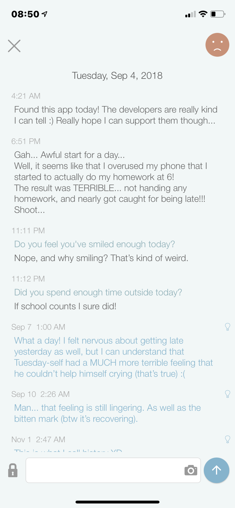
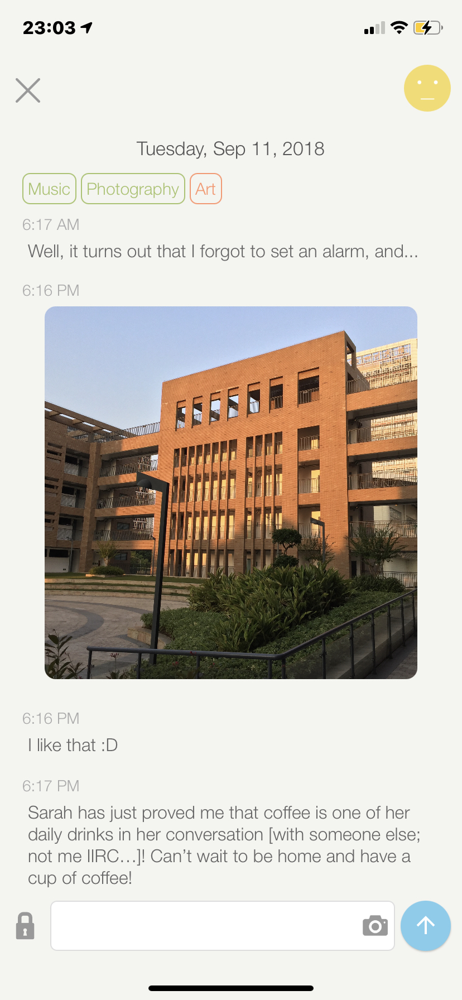

The basicproc Module#
(Formerly 0.md, titled Backup File and Processing)
- Author:
rapidcow
- Date:
June 21, 2021
- Source:
Abstract#
In this document, I will introduce the backup scheme for the app Perspective, as well as the program that does basic processing of the backup file of the backup file and prints out the entries to the terminal.
At the beginning I tried to make this a progressive documentation, starting with the motivation and then slowly working up to the algorithm and code. Skip to The Program to get a more technical documentation.
Inspection#


Figure 1 Demonstration of the interface of Perspective.#
To begin with, let’s start by looking at the user interface of Perspective
so that we know what we’re dealing with. I chose this day because it has
alost all types of information we need to store. First, we have the text
“Tuesday, September 4, 2018” at the top [Note from future me: I totally
misread it which is why I used %B instead of %b in my code… just to
tell you I didn’t mean to do that! If you came from the psp library
please read this on how to fix this issue]. This page
contains entries such as the one with the time “4:21 AM” and
“Sep 7 1:00 AM”. And for terminology sake,
we’ll call this page a panel. A panel is perhaps better thought of as a
forum where entries with relevant topics ares posted.
There are two types of entries, “main” entries and insight entries; the name
“main” is an unofficial name I gave to the entries that are not insight
entries. Insight entries are distinguished from main entries in a way that
they are inserted much later than the date of the panel: specifically, 2
days after the panel’s date. We use a boolean "insight" to keep track
of this, which is true for an insight entry and false for a main entry.
(Note: There is a way to insert main entries even after 2 days, and that is by tapping the lock icon so that it becomes unlocked. So, in conclusion, while it is impossible to insert insight entries within 2 days after the panel’s date, both insight entries and main entries can appear after that.)
An entry can also hold two types of data: text and image. Each entry holds precisely one of them. All of the entries seen in Figure 1 hold plain text. Interestingly, in the current implementation, these two types are treated equally as a stream of bytes, or just binary data. Text being special kind of binary data, as it comes with an encoding.
There is also something to be noted here. Take the entry written at 23:11, for example. It has a special line of blue text and gray paragraph following it. I don’t know what they are called, but they are just like mindful questions asked by the app, and the gray text is what I responded with.
In summary, these are the most essential things we have to deal with: (things after the colon are the attributes contained within)
panel: date
entries: date and time, text or image data, main or insight
question
Backup File Structure#
Basic Structure#
Our backup file starts with a top-level object, containing convenient global attributes like the time zone. By the way, what I mean by an attribute is simply a key-value pair (in Python terminology). For example in the current file, the time zone is specified as
{
"tz": "+08:00"
}
which means that the time zone attribute "tz" holds a value of
"+08:00", or 8 hours ahead of UTC (that’s the standard time in China
here!). The JSON file would therefore look like
{
"tz": "+08:00",
"data": [
"..."
]
}
and inside the list identified by the key "data" is what we will store
the panels. (The "..." is simply a placeholder for the panels, not
literally a string of ellipsis.) Each panel is uniquely identified by a
date, and so in this JSON file, we use ISO format to store the date.
A panel for Figure 1 would therefore look like this:
{
"date": "2018-09-04",
"entries": [
"..."
]
}
where inside the key entries we store the entries. Of course, some
panels may have no entries at all, which means that we should treat
entries as an optional attribute for a panel. Altogether, we have
{
"tz": "+08:00",
"data": [
{
"date": "2018-09-04",
"entries": [
"..."
]
}
]
}
Entry Data and Inheritance#
Next we need to decide how we can store data for the entries. To do this we need to make out a trickier move. Let’s take the first entry in Figure 1 for example. Considering the information we need includes the date, the time, and the text itself, we need at least three attributes:
{
"date": "2018-09-04",
"time": "04:21",
"data": "Found this app today!"
}
This is meant to be placed in the list of "entries" in the code block
above (marked with "..."), which as a whole would look like
{
"tz": "+08:00",
"data": [
{
"date": "2018-09-04",
"entries": [
{
"date": "2018-09-04",
"time": "04:21",
"data": "Found this app today!"
}
]
}
]
}
Note that I translated the 12-hour format into 24-hour format. This is also
a part of the ISO standard and is easier to parse. But in this way typing
the date can get cumbersome. Well this is ultimately inevitable, but what
we can do is to inherit the date information from the panel if it is not
provided. So in this case, this entry was posted on the same day as the
panel, and hence we can let the program infer the "date" from the
panel. The “simplified” data would therefore be
{
"time": "04:21",
"data": "Found this app today!"
}
In addition, in cases we DO need to specify date and time at the same time,
we propose a convenient “attribute” date-time that does this for us.
As an example, the date and time should be specified as
{
"date-time": "2018-09-04 04:21"
}
Date and time may be separated by a space character or the character (code)
'T'. This is equivalent to the second code block above.
Oh, and forgot to mention, time zone is automatically inherited as well.
You may put it at the very top (like in the example above) or inside a panel:
{
"data": [
{
"date": "2018-09-04",
"tz": "+08:00",
"entries": [
"..."
]
}
]
}
This can be helpful if you want to change time zone temporarily for one panel locally. You can also put one directly inside an entry like this:
{
"time": "04:21",
"tz": "+08:00",
"data": "Found this app today!"
}
and the time zone will only apply to this entry.
Insight and Question#
The "insight" is a boolean attribute that is used to distinguish main
and insight entries. (Remember that the insight entries are the ones that
are blue and added much later than the main ones.) Since they are False
by default, you will have to add it explicitly for an insight entry:
{
"date-time": "2018-09-07 01:00",
"insight": true,
"data": "What a day!"
}
The question on the other hand is specified by a JSON string under the key
"question":
{
"time": "23:11",
"question": "Do you feel you've smiled enough today?",
"data": "Nope, and why smiling? That’s kind of weird."
}
Data Model and Images#
As we discussed earlier, text and image data are treated equally in our
program. Data with text is quite straightforward, as the JSON file itself is
text encoded in UTF-8 (as in examples above). Data with images, i.e. binary files are a bit trickier. Since bytes cannot be directly typed into a
plain text document, an encoding like base 64 or base 85 has to
be used in order to represent bytes as ASCII characters. In order to perform
one of these ASCII-to-binary decoding process on the "data" attribute, we
propose the "data-encoding" attribute, and can be used as follows:
{
"time": "04:00",
"encoding": "utf-8",
"data-encoding": "base64",
"data": "SGVsbG8hICBBbmQgdGhpcyBpcyBhbiBleGFtcGxl"
}
This is equivalent to
{
"time": "04:00",
"data": "Hello! And this is an example"
}
The "encoding" here is necessary because normally we expect a binary
stream of data here. The process by which the program loads the data, though,
is a little bit funny. We already know Python loads "data" as a UTF-8
string, so what the program does is as follows:
The program notices that
"data-encoding"is in the entry, and so the"data"is encoded usingstr.encodeintobytesobject with encodingascii. (In other words, the"data"is interpreted as an ASCII string and encoded, meaning that you cannot use any non-ASCII string.)The program then calls
base64.b64decodefrom standard library to decode the ASCII characters into a stream of data.Seeing the
"encoding"was specified and is notNone, the program infers this stream of data to be text.
Of course, how the program keeps track of what is “text” and what is “binary”
is exactly whether an encoding was provided (unless the data comes directly
from the file without "data-encoding", in which case utf-8 is assumed
to be the encoding).


Figure 2 A Perspective panel with image.#
Now coming back to the main problem: how do we store images? Well, an image,
after all, is just a stream of bytes with special structure (and a special
extension), so all we have to do is store them inside "data" and then,
similar to how an extension work, we will tell the program about the
"type" of the data. So if we were to, say, store the image entry in
Figure 2, it should look something like this:
{
"date": "2018-09-11",
"entries": [
{
"time": "18:16",
"type": "jpeg",
"data-encoding": "base64",
"data": "/9j/4AAQSkZJRgABAQAASABIAAD/ (goes on and on...)"
}
]
}
But since these images are typically big, and… you know, these things are typically kept in a file, we propose yet another way to include binary data that are present as a file! Like this:
{
"time": "18:16",
"type": "jpeg",
"input": "path/to/file.jpg"
}
And now we can just toss "data-encoding" and "data" out of the
window…! In this case, since there’s no leading slash, this will be a
relative path to where the program is run. Of course, sometimes you can even
leave out the "type", and just let the program infer it from the extension,
but, uh… it’s good to know that you can be explicit like this.
Metadata#
Oh, and one last thing before we go! This is mainly due to that, as files
don’t tend to preserve their creation date when we move them around, and the
metadata is basically lost when we use the "data-encoding" to store files,
we propose one last thing to store: metadata.
For now, it’s very simple. All you have to do is specify meta as a dictionary (JSON object) like this:
{
"time": "18:16",
"input": "2018-09-11_2018-09-12_05-25.jpg",
"caption": "...",
"meta": {
"created": "2018-09-11 17:58"
}
}
There are no specifications yet as I don’t have anything particular about what I want to do with this in mind yet… but you should know that the times specified here are in ISO format and complete (like this one)! Time zone can be omitted though, cuz that would be way too tedious.
The Program#
An excerpt of the backup file we’re dealing with (save it as
backup_test.json!):
{
"desc": [
"Backup for my Perspective entries!",
],
"tz": "+08:00",
"paths": [
"img", "img_original"
],
"data": [
{
"date": "2018-09-04",
"rating": ":(",
"entries": [
{
"time": "04:21",
"data": "Found this app today!"
}
]
},
{
"date": "2018-09-05",
"rating": ":|",
"entries": [
{
"time": "22:20",
"input": "2018-09-05_22-20.jpg",
"meta": {
"created": "2018-09-05 17:41"
}
}
]
}
]
}
There are two parts that I haven’t introduced yet (which I apologize >w< but because they are quite unimportant to the whole scheme I delayed them until now):
The
"paths"attribute. These are the directories that the program will try to prepend to an"input"path to find a file. The program will first search in the current working directory, by the way. (A warning will be generated for ambiguous cases where a file is found in multiple directories.)The
"rating"attribute in entries. This is the smiley face, bland face and the frowning face that appears on the top-right corner! (See either Figure 1 or Figure 2 for reference.)
Top-Level Data Extraction#
Now the rough idea is that we use two classes: Panel and
Entry, both responsible of the panel and entry data. Before that,
however, we still have to deal with the outermost layer of configurations,
like "tz" and "path".
To be clear, this is how we would load a backup file:
import json
with open('backup.json') as fp: # encoding is utf-8 by default
bk = json.load(fp)
I call this bk the backup dictionary (although you might be screaming
bu at me… if so then sorry, but this is what I decided…)
Now there are several things needed to be extracted from the backup file…
for one we need to extract the description, which is a list of strings to be
joined by ''.join(). This is done by the module-level function
backup_get_description(). On the other hand, if we want to get the
data itself (which we recall as simply a list of panels), then
backup_get_data() is called. Finally, the way we pass these important
attributes (like "path") onto the Panel object is by extracting
them from backup_get_attributes function.
def backup_get_description(bk) -> str: pass
def backup_get_data(bk) -> list: pass
def backup_get_attributes(bk) -> dict: pass
Next we need data_get_by_date() to extract a specific panel by date.
It should check for duplicates. If one only wants to check for duplicates,
then data_check_duplicates() does this job. It also returns a set
containing all unique dates as datetime.date objects for debugging
purposes.
# Raises ValueError
def data_check_duplicates(data) -> set: pass
# Raises LookupError or ValueError
def data_get_by_date(data, date, *, duplicates_ok=False) -> dict:
pass
Rough Idea#
So what are we trying to do here? Well let’s fire up an interactive session to show you what I want to do here. If you have the script now, what you may do is run
>>> from basicproc import *
to follow along. First, we want to load the backup file. After you load the file you’ll see it has some keys:
>>> import json
>>> with open('backup_test.json', encoding='utf-8') as fp:
... bk = json.load(fp)
...
>>> bk.keys()
dict_keys(['desc', 'tz', 'paths', 'data'])
The functions we mentioned above extract the dictionary in multiple ways by their keys. I wrote what keys they extract in the comments.
>>> # Extract 'desc'
>>> backup_get_description(bk)
'Backup for my Perspective entries!'
>>> # Extract everything aside from 'desc' and 'data'
>>> attrs = backup_get_attributes(bk)
>>> attrs.keys()
dict_keys(['tz', 'paths'])
>>> # Extract 'data'
>>> data = backup_get_data(bk)
>>> from pprint import pprint as pp
>>> pp(data)
[{'date': '2018-09-04',
'entries': [{'data': 'Found this app today!', 'time': '04:21'}],
'rating': ':('},
{'date': '2018-09-05',
'entries': [{'input': '2018-09-05_22-20.jpg',
'meta': {'created': '2018-09-05 17:41'},
'time': '22:20'}],
'rating': ':|'}]
We would like to load a panel, let’s say. This can be done by using the
class Panel. Its constructor parses the fields as well as preparing a
printer for us to use, which is why we pass the keyword argument width to
it.
>>> panel_dict = data[0]
>>> panel = Panel(panel_dict, attrs, width=60)
>>> panel
<Panel object on Tue Sep 4 2018 (+08:00)>
>>> panel.date
datetime.date(2018, 9, 4)
>>> panel.entries
[<Entry object at Tue Sep 4 04:21 2018 (UTC+08:00)>]
>>> panel.attrs['rating']
':('
We can access the fields belonging to the entries too:
>>> entry = panel.entries[0]
>>> entry
<Entry object at Tue Sep 4 04:21 2018 (UTC+08:00)>
>>> entry.date_time
datetime.datetime(2018, 9, 4, 4, 21, tzinfo=datetime.timezone(datetime.timedelta(seconds=28800)))
>>> pp(entry.data)
{'caption': None,
'encoding': 'utf-8',
'format': None,
'raw': b'Found this app today!',
'type': 'plain'}
>>> entry.insight
False
>>> entry.attrs
{'question': None}
You would almost never need to construct an Entry class yourself, since
they would be automatically parsed by the Panel. But anyway, to construct
an Entry object, you’ll need the parent panel and a dictionary of an
entry.
>>> entry_dict = panel_dict['entries'][0]
>>> entry_dict
{'time': '04:21', 'data': 'Found this app today!'}
>>> entry = Entry(entry_dict, panel)
>>> entry
<Entry object at Tue Sep 4 04:21 2018 (UTC+08:00)>
(This new entry object functions in the exact same way as
panel.entries[0] does, so there’s no need for us to reassign entry.)
Now here’s the really cool part: you can call the to_string() method to
format the panel!
>>> if True:
... print('=' * 60)
... print(panel.to_string())
... print('=' * 60)
...
============================================================
Tuesday, September 4, 2018 :(
4:21 AM
Found this app today!
============================================================
You can see that the title is centered within the text frame of width 60,
and that is because we passed width=60 to the constructor of
Panel previously. Of course, you can change this up by accessing
the width attribute, although the result can look weird if you decide to
try out small values…
>>> panel.width = 10
>>> if True:
... print('=' * 10)
... print(panel.to_string())
... print('=' * 10)
...
==========
Tuesday,
September
4, 2018
:(
4:21 AM
Found
this app
today!
==========
Entry objects also have a to_string() method (which is called by
Panel.to_string() to format string for a single entry):
>>> if True:
... print('=' * 10)
... print(entry.to_string())
... print('=' * 10)
...
==========
4:21 AM
Found
this app
today!
==========
Anyhow, hopefully you got a good understanding of what these classes
primarily do: they both take the raw dictionary from the JSON file as
arguments, and store the information within themselves. The to_string
methods format the panel and entry and can be printed out as shown above.
The Panel Class#
- class basicproc.Panel#
The main job of
Panelis to hold the following attributes:The date
The entries: a list of objects representing the entries
The rating: an optional string like
':)'and':('
In addition to that, we also want to keep track of the lookup paths when we encounter an
"input"field. For the purpose of printing, we also need to know what text wrapper (an object that wraps text to a certain width) we’re using, as well as the level of indentation.The date and entries are stored in the attributes
dateandentriesof the class respectively, howeverratingis stored in the dictattrs. [1] Weirdly enough, the time zone stringtzis also stored inattrs.The list of lookup paths is stored in
paths. The width of text is internally stored in_width, which will be accessed through a descriptor later on. The wrapper and the level of indentation are stored in_wrapperand_indentrespectively.Here’s the entire code for the initialization:
class Panel: """Panel containing entries for a single day. Parameters ---------- panel : dict A dict loaded from a JSON object of the panel. In `backup.json` this is any of the objects within the "data" key. This can be extracted from a backup dict using `backup_get_data`. attrs : dict Extracted by `backup_get_attributes`, this contains information that acts as global options in `backup.json`. width : int, default 80 Maximum length of lines for the printed text. Since this works by calling `textwrap.TextWrapper`, this breaks if trying to format a paragraph with a word longer than this integer. """ __slots__ = ( 'date', 'entries', '_width', '_wrapper', '_indent', 'paths', 'attrs', ) def __init__(self, panel, attrs, width=80): # Default values self.attrs = dict(tz=None, rating=None) self.paths = ['.'] self._set(attrs) self.width = width self._indent = 0 self._wrapper = textwrap.TextWrapper() self._process(panel)
We see that
attrsis processed by the_setmethod andpanelis processed by the_processmethod. The_setmethod sets the attributes if they exist, and the attributes include the time zone tz and the lookup paths paths. It is called before_process(panel)so that attributes in panel can override the attributes inattrs. The following lines settingwidth,_indent, and_wrapperdon’t affect anything set by_set.Any key aside from
tzandpathswill cause anInvalidEntryErrorto be raised. Something like this:>>> from basicproc import Panel >>> Panel({}, {'extra': 0, 'keys': 0, 'paths': []}) Traceback (most recent call last): ... basicproc.InvalidEntryError: unrecognized keys: 'extra', 'keys'
Next is the
_processmethod call. It only requires one attribute: thedate. It also takes in some optional attributes:- paths
Lookup paths, identical to that in attrs. Required to be a list of
strif provided. Will be used to updateself.pathsin a way these paths are looked up first. [2]- tz
Time zone, identical to that in
attrs. Will be set inself.attrs['tz'].A
tzhas a rather strict syntax, namely due to that the class methoddatetime.datetime.fromisoformatis used for parsing. If we denote the string holding the value astz, and thefromisoformatmethod asf, thentzis valid only whenf('0001-01-01T00:00' + tz)doesn’t raise aValueError.- rating
The rating of the day. Will be set in
self.attrs['rating']and defaults toNone.- entries
List of
dict. If we store eachdictin a variable namedentry, thenEntry(entry, self)is created and is appended to the listself.entries.
The Entry Class#
- class basicproc.Entry#
An
Entryholds a lot of things:The date and time (plus time zone)
The parent panel—the panel it belongs to
A boolean for whether or not it is an insight
The data (like the text or image)
The metadata (like the creation time of a photo)
In addition to that, it holds the following attribute optionally:
Question (see Insight and Question if you don’t know what that is)
(Yeah. I know that’s just one but I still listed it just to be consistent.)
In addition, we need the variables for the wrapper and indent just like the case for
Panel, but instead of creating our own_wrapperand_indent, we’re going to inherit them fromEntry.class Entry: """An entry belonging to a panel. Parameters ---------- entry : dict A dict loaded from a JSON object of the entry. In `backup.json` this is any of the objects in the "entries" key of a panel. panel : Panel object The panel that the entry to be created belongs to. load_file : bool, default False Whether to load file that are specified "input" into memory. strict : bool, default True Whether to validate the entry at the end of initialization. """ __slots__ = ( 'date_time', 'panel', '_wrapper', '_indent', 'insight', 'data', 'attrs', ) def __init__(self, entry, panel, load_file=False, strict=True): self.panel = panel self.insight = False # Default values self.data = dict(type=None, format=None, encoding=None, caption=None) self.attrs = dict(question=None) self._wrapper = self.panel._wrapper self._process(entry, load_file=load_file) if strict: self._validate()
Again we’re going to talk about what
_processdoes here. The required fields however aren’t just simply one but one of two keys. They are:timeordate-timedataorinput
For example, if you look at the first entry, you will see that only time and data are provided:
{ "time": "04:21", "data": "Found this app today!" }
Here’s a brief description of all the possible keys you can pick. Starting from time-related keys:
- time
Time in ISO format. This when joined with the
datevalue usingdate + 'T' + time + tz, wheretzis the time zone, must be valid when passed todatetime.datetime.fromisoformat. Can contain time zone offset; see more at description ofdate-time.- date
Date in ISO format. See description of time for when this is valid. Defaults to
panel.date.isoformat()wherepanelis the second argument in__init__(aside fromself).- date-time
Date time in ISO format. Must be a valid string when passed to
datetime.datetime.fromisoformat. Can contain time zone offset which will be preserved as opposed to inheriting from
Then we have data and input. These are the primary ways to store data as we discussed in Data Model and Images.
- data
The text data verbatim. Or, if
data-encodingis specified, the encoded ASCII string verbatim. May be a string or a list of strings.- input
The path of the file containing the data. The program will first seek the path in the current working directory (
os.getcwd()orbasicproc.BASE_DIRwhich you can modify for more control) and thenpathsif you specified them, treating all of them as relative paths toBASE_DIR.Side note:
pathsspecified in the current panel are sought first, and thenpathsspecified at the top level are sought second.- data-encoding
A string that is either one of the strings in the “Name” column of the following table.
Name
Function called
"base16"base64.b16decode"base32"base64.b32decode"base64"base64.b64decode"base85"base64.b85decode"ascii85"base64.a85decode
Next is the type and encoding fields. It’s worth noting that although these field are optional, they are automatically inferred from other information provided. See Inference Rules for the algorithm.
- type
A string that describes the type of the data. Default types are
"plain"for text data and"binary"for binary data.There are text types such as
markdownand binary types such asjpegandpng.If this is not provided, then it defaults to
"plain"or"binary"based on how the data is provided.- encoding
A string that is either
"binary"or an encoding supported by the Python modulecodec. If this is not provided, then it defaults to “utf-8” or"binary"based on how the data is provided.
Here are some rules on how type and encoding are inferred, if they’re not provided:
If data is given by the key
"data"without"data-encoding", then by default,type = "plain",encoding = "utf-8".Actually
encoding = "utf-8"is not a default, but rather a strict requirement. This is because strings in Python 3 are UTF-8 strings internally, and so it would only make sense if the encoding is UTF-8 too to reflect that.Providing an encoding other than
"utf-8"will cause the program to issue alogging.WARNINGlevel of log and the encoding is treated as"utf-8".
If data is given by the key
"input"or by keys"data"and “data-encoding” together, then by default (when neithertypeor encoding is provided)type = "binary",encoding = "binary".This gets a little more complicated when the input path has an extension we can extract with
os.path.splitext. Of course, the main motivation for this inference is that we don’t want to provide the same kind of information twice. When we input from a file with a.jpgor.jpegextension, we know that it is a JPEG file and so we shouldn’t need to write"type": "jpeg"again.When the file has extension and the program can infer the type from it, then
typeis set to that inferred type, and encoding is either set to"utf-8"or"binary", depending on whether the inferred type is of text or binary type.
Some more optional fields:
- format
The format of the data, typically accompanied by
type. For example, when we have atypeof"markdown"andformatof"pandoc", then we’re saying that the Markdown file should be interpreted with pandoc’s default format.
- type-format
Shorthand for providing type and format.
"type-format": "TYPE_STRING-FORMAT_STRING"is equivalent to"type": "TYPE_STRING", "format": "FORMAT_STRING", where the hyphen character - separates the two.- caption
Short caption/alt text for the data. Can be a string or a list of strings. Defaults to
None.- question
A string of a question preceding the block of text written by the user. Defaults to
None.See Insight and Question for reference.
- insight
A boolean indicating whether this entry is an insight (see Insight and Question too for reference). Defaults to
False.- meta
Metadata. Currently this can be any
dictwith no restriction whatsoever, but the following attributes specifically will be parsed:created: Creation time of a file as a string. For a photo, this would also be the time it was taken at. Should be a valid string when passed todatetime.datetime.fromisoformat, and if the result is a naive time object, replacestzinfowith that ofself.date_time.Defaults to None, which means that the creation date is unknown or this piece of information doesn’t make sense here.
This time should be no later than the time provided through the
date-time/timefield, otherwise anInvalidEntryErrorexception is raised.posted: Time that this entry was posted at as a string. Note that this is reserved specifically to the time that is displayed on the Perspective app. This key is useful when the entry was posted much much later than when it was actually written (e.g. when I wasn’t with my phone and could only write on my notebook or type on my laptop).Format requirements is similar to that of
created.This time should be no earlier than the time provided through the
date-time/timefield, otherwise anInvalidEntryErrorexception is raised.desc: Description. This key is provided very commonly but surprisingly there’s no validation???Noneby default.
Inference Rules#
Inferences we are going to talk about are type and encoding. When
they’re left out, their values are automatically set based on how the data
are provided and the extension of a file, if input from the "input" key.
But first, I want to be clear what I mean by “infer,” because as fancy as it sounds… it’s nothing more than just a simple lookup like finding a value in a dict with a key. The following are all possible inferences:
From type (like
plainandmarkdown), to encoding (likeutf-8andbinary).From encoding, to type.
From extension (like
.jpg,.txt), to type.
Oh, and in addition, types can have aliases! Like for example, you can write
"type": "jpeg" or "type": "jpg", and they’ll all be converted to
"type": "jpeg". [3]
For the first inference: the inference from type to encoding, it is made
possible by keeping track of types that are known to be text, which is
stored under the name TEXT_TYPES as a set of strings: [4]
import basicproc
print(basicproc.TEXT_TYPES)
Therefore the inference works something like this:
from basicproc import TEXT_TYPES
def infer_encoding_from_type(type_):
if type_ in TEXT_TYPES:
return 'utf-8'
# Function has already returned; no need for "else: ..."
return 'binary'
And as a few examples, if you define the above function and fire up an interactive prompt:
>>> infer = infer_encoding_from_type
>>> infer('plain')
'utf-8'
>>> infer('binary')
'binary'
>>> infer('markdown')
'utf-8'
>>> infer('spaghetti')
'binary'
Now for the second kind of inference: inference from encoding to type. It’s
even simpler actually, since any encoding other than binary always implies
some sort of text format, which would make the type plain, by default. An
implementation would therefore look like this:
def infer_type_from_encoding(encoding):
if encoding == 'binary':
return 'binary'
return 'plain'
Finally the third inference: inference from file extension to type.
In the program extensions like .txt and .md are registered at the
beginning of the program. They can be looked up using TYPE_EXTENSIONS
dictionary:
>>> from basicproc import TYPE_EXTENSIONS as ext_to_type
>>> ext_to_type['.jpg']
'jpeg'
>>> ext_to_type['.jpeg']
'jpeg'
>>> ext_to_type['.txt']
'plain'
>>> ext_to_type['.crazyname']
Traceback (most recent call last):
...
KeyError: '.crazyname'
The algorithm for the inference looks like this:
from basicproc import TYPE_EXTENSIONS
from os.path import splitext
def infer_type_from_input_path(path):
_, ext = splitext(path)
try:
return TYPE_EXTENSIONS[ext]
except KeyError:
return None
One problem in this code (though not likely to occur) is that extensions like
.tar.gz will be impossible to detect. Thankfully that’s possible with the
new psp module! (Get excited for that too! Or not… i don’t care…)
Examples:
>>> infer = infer_type_from_input_path
>>> infer('some/dir/dog.png')
'png'
>>> infer('some/dir/cat.jpg')
'jpeg'
>>> type_ = infer('some/dir/horses_go.meow')
>>> type_ is None
True
Now with the three kinds of inferences in mind, we can finally talk about how the program infers types! (The word INFER in all-caps refers to one of the inferences we discussed above)
datawithoutdata-encodingIf
encodingis provided, issue a warning if it’s not'utf-8'. Treat encoding asutf-8in any way.If
typeis provided, store it as is. Otherwisetypeis INFERRED fromencoding(which is always going to be'plain'sinceencodingis always'utf-8').
inputIf
typeis provided, store it as is. Otherwise INFERtypefrom the extension, defaulting toNone/unset. (As seen in the function above, this default process is returning aNone.)(The code implements this with
_infer_type_from_input, whereself.data['type']is remained unchanged asNoneby simplyreturning. Just wanted to point that out since the code is very poorly written…)At this point, if
typeis still unset, it is INFERRED fromencodingby default.
Now that the type is guaranteed to be set, INFER
encodingfromtypeifencodingis unset.
datawithdata-encodingIf
typeis provided, store it as is. Otherwise INFERtypefromencodingif it is set, defaulting to'binary'.If
encodingis provided, store it as is. Otherwise INFERencodingfromtype.
By saying “defaulting to” after an inference I mean the case when the
inference fails. For inferring from an extension, it would be finding no
extension at all or not able to identify the extension (like in the case of
some.crazyname). For inferring from a type or encoding, it would be the
case of finding the type or encoding unset. For the case of type, the type
may also be unregistered, causing the lookup to fail.
Now here’s a Python-like pseudo code that intuitively explains what the
algorithm does. Here we assume that entry is a dictionary of the entry:
enc = entry.get("encoding", None)
type = entry.get("type", None)
if "data" in entry:
if "data-encoding" in entry:
data_enc = entry["data-encoding"]
ascii_data = entry["data"].encode("ascii")
raw_data = decode ascii_data with data_enc
if type is None:
infer type from encoding (default "binary")
if enc is None:
infer encoding from type
else:
data = entry["data"]
enc = "utf-8"
if type is None:
type = "plain"
raw_data = data.encode(enc)
else:
# "input" in entry
input_path = entry["input"]
if type is None:
infer type from extension of input_path (default None)
if type is None:
infer type from encoding (default "binary")
if enc is None:
infer encoding from type
Fun Stuff#
Some fun little mini-programs to show what we can do with this!
Who’s the longest diary?#
# Standard library
import datetime
import shutil
import json
# Our own stuff
from basicproc import (backup_get_attributes, backup_get_data,
data_get_by_date, Panel)
from basicproc import data_check_duplicates
columns, lines = shutil.get_terminal_size()
with open('backup.json') as fp:
backup = json.load(fp)
attrs = backup_get_attributes(backup)
data = backup_get_data(backup)
max_ents = []
max_words = []
N = 90
for pan in data:
panel = Panel(pan, attrs, columns)
for ent in panel.entries:
if ent.is_binary():
continue
words = len(ent.get_text().split())
if len(max_words) > N:
if words > max_words[N - 1]:
max_words.pop()
max_ents.pop()
else:
continue
max_words.append(words)
max_ents.append(ent)
max_ents, max_words = [list(u) for u in zip(*sorted(
zip(max_ents, max_words), key=lambda t: t[1], reverse=True
))]
print(f'TOP {N} LONGEST ENTRIES')
print()
for i in reversed(range(1, N + 1)):
ent = max_ents[i - 1]
wc = max_words[i - 1]
header = f'NUMBER {i}'
print(header)
print('=' * len(header))
if ent.insight:
ic = ' (insight)'
else:
ic = ''
print(f'{ent.panel.date:%a %b %e, %Y}{ic}, scoring {wc} words!')
print()
print(ent.to_string())
print()
updated version (only the for loop part):
for i in reversed(range(1, N + 1)):
ent = max_ents[i - 1]
wc = max_words[i - 1]
header = f'NUMBER {i}: scoring {wc} words!'
print(header)
print('-' * len(header))
print(ent.to_string(label_insight=True, long_format=True))
print('\n')
this is due to a new keyword argument label_insight we introduced to
Entry.to_string! (And also long format which always prints the full date)
Extract entries written on the same days#
# Standard library
import datetime
import shutil
import json
# Our own stuff
from basicproc import (backup_get_attributes, backup_get_data,
data_get_by_date, Panel)
from basicproc import data_check_duplicates
columns, lines = shutil.get_terminal_size()
with open('backup.json') as fp:
backup = json.load(fp)
attrs = backup_get_attributes(backup)
data = backup_get_data(backup)
def criteria(entry):
lo = datetime.date.fromisoformat('2019-01-01')
hi = datetime.date.fromisoformat('2019-01-20')
return (lo <= entry.date_time.date() <= hi
and entry.insight) # use this if you only want insights
ents = []
for pan in data:
panel = Panel(pan, attrs, width=columns)
for ent in panel.entries:
if criteria(ent):
ents.append(ent)
ents.sort(key=lambda e: e.date_time)
last_date = None
for ent in ents:
this_date = ent.panel.date
if this_date != last_date:
last_date = this_date
date_str = this_date.strftime('%a, %B %e, %Y')
print(date_str)
print('-' * len(date_str))
print(ent.to_string(label_insight=True))
print()